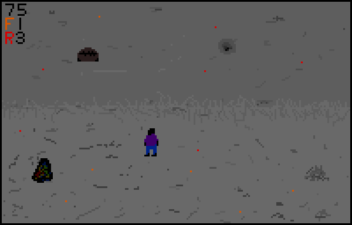
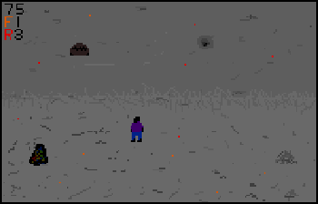
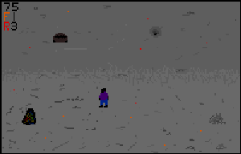

The world has come to an end. You are a survivor of the Armageddon and now live amongst brimstone and
embers, inhabiting a shell of the world that once was. Scavenging the charred surroundings for
resources day by day, you are completely alone, a drifting mote amid a sea of ash. But Armageddon did
not settle for simply destroying the world. It created life of its own. Life wrought of fire,
infernal creatures that appear to hunt when darkness falls. Hide, or never be seen, for they are no
friends of yours. Trudge as far as your legs can take you, and perhaps you will find respite, safe
haven among the cinders.


